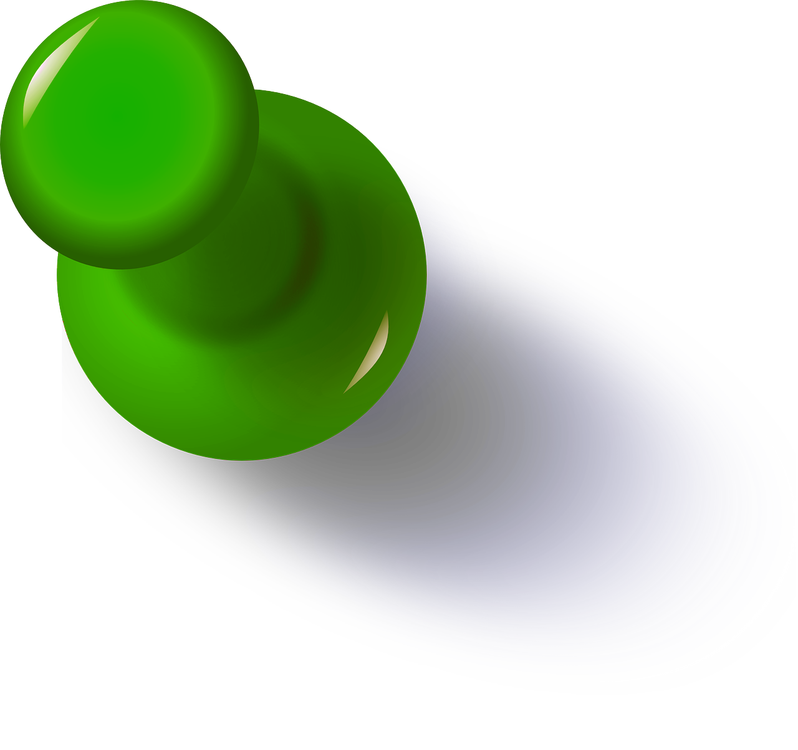
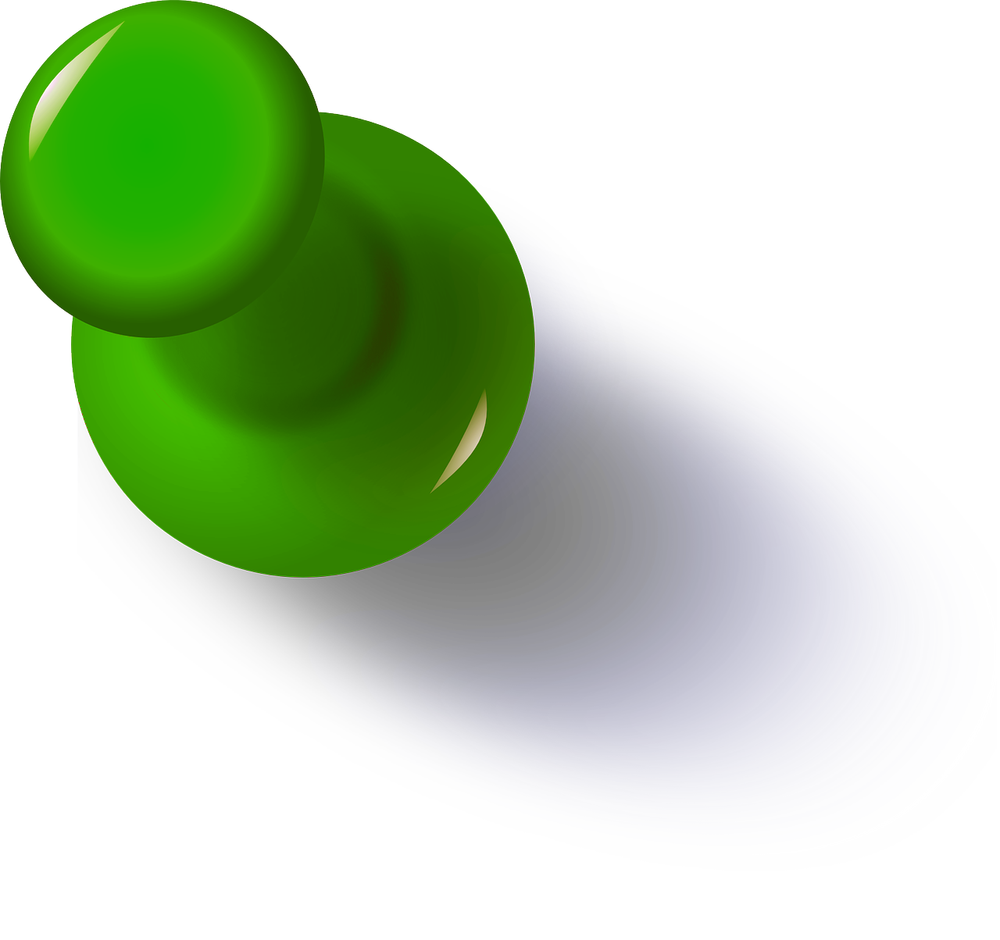

Informatikk: Design, bruk, interaksjon (Bachelor) - UiO
Student / 2020 - d.d.
I 2020 begynte jeg på en bachelorgrad ved Universitet i Oslo. Studiet tar for seg brukerorientert design med noe datasikkerhet og objektorientert programmering.
Som prosjektoppgave i 2022 utviklet jeg og gruppen min en applikasjon (Solbrent) for å måle UV-stråling og beregne hvor sterk solkrem man trenger basert på hudfarge, for å unngå solbrenthet. Skisser og front-end design var mitt ansvar i gruppen og appen ble kåret til 'visuelt slående' app det semesteret.